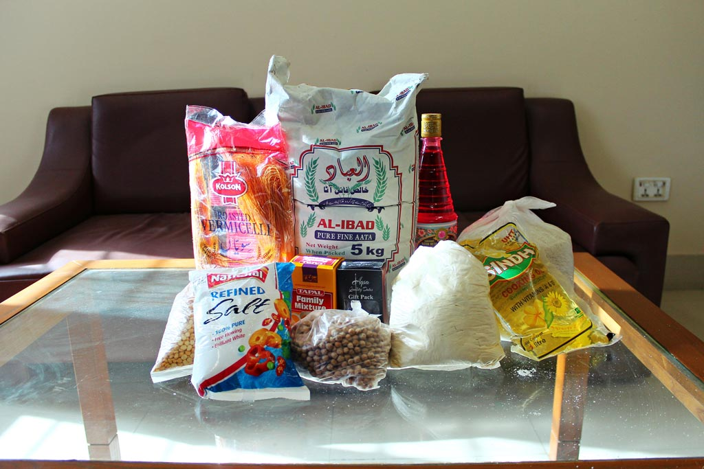
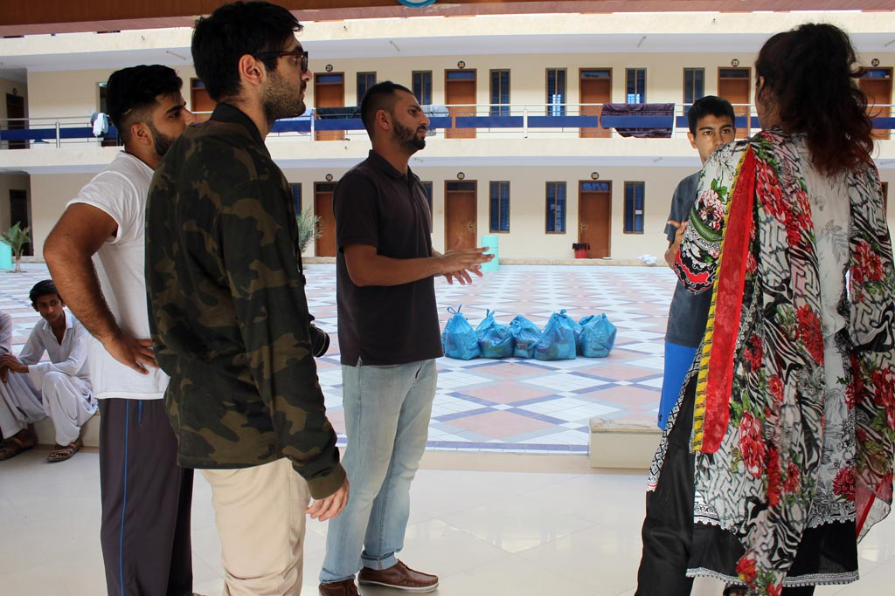
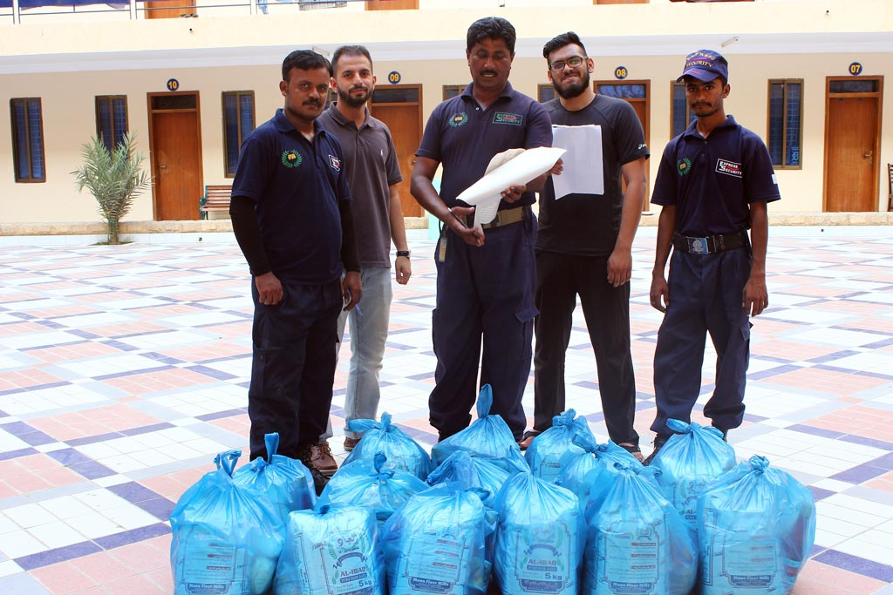

DIPCA Celebrates Success of Annual "Feed The Shield" Initiative - 2017
June 6th, 2017
KARACHI, PAKISTAN — The Dow International Patient Care Association announced the success of its annual initiative called "Feed The Shield", a program dedicated to serving the resident guards who protect and look out for the staff, students and visitors to the Ojha campus.

A DIPCA executive statement was posted, which can be read below:


We thank anyone and everyone who supported this cause in any way, shape, or form. We look forward to improving and expanding our scope for next year.
To contact DIPCA about this story, please follow this link.